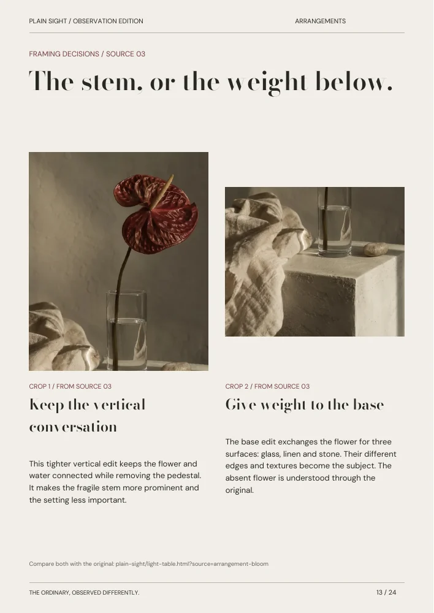

CREATIVE EXPLORATIONS / NOT THREE FINISHED PRODUCTS
Three ways
to look.
Visual and typographic studies evaluated against the same five source images and six visitor journeys. These comparisons support the selected implementation; they are not usability-study results.
A / THE DIGITAL EXHIBITION
Presence before explanation.
SOURCE 02 / GESTURES
The weight
of a fold.
One image. An unobtrusive caption. Clear next and exit controls.

TYPE SYSTEM A / HIGH-CONTRAST EDITORIAL
A gesture leaves a trace.
DM Sans / 16px body · 14px controls · 13px captions.
Previous ← 02 / 05 Next →Strongest emotional focus and simplest individual view. Weakest overview: a sequence can make five scenes feel like a slideshow rather than a research archive. Selected as an optional manual focused viewer, with the entire image visible and ordinary exit controls. No autoplay, sound, parallax or scroll interception.
B / THE OBSERVATION INDEX
Make the material understandable.
FIVE SOURCES / THREE STUDIES
Look.
Locate.
Compare.
Source → derivative → editorial decision. A small archive with a clear identity for every image.


TYPE SYSTEM B / CONTEMPORARY SWISS
Every image has a place.
DM Sans across display, body and metadata. Hierarchy from scale, weight and spacing.
Original source / Compare the framing ↗Strongest orientation, source integrity and maintainability. The all-grotesk direction is precise but too uniform for the emotional range of the images. Selected as the information architecture; softened with an editorial display voice and chapter-specific image relationships.
C / THE LIVING PUBLICATION
Let sequence make meaning.
THE READING EDITION / PAGE 13
The stem,
or the weight
below.
Whole image, detail, pause. A page index keeps a curated sequence easy to enter.

TYPE SYSTEM C / HYBRID PHOTOGRAPHIC ARCHIVE — SELECTED
A second look.
DM Sans for ordinary reading and controls. Bodoni Moda for editorial entry and pacing. Image IDs use tabular numerals in the same sans; a third metadata family is unnecessary.
Page 13 of 24 / Enlarge pageStrongest web-to-print connection. A page metaphor alone makes fast image discovery slower, and mobile cannot reproduce every spread. Selected as a dedicated reader with actual page previews, a text companion and a direct route back to the source.
COMPARATIVE JUDGMENT / QUALITATIVE, MEDIUM CONFIDENCE
A coherent hybrid.
| Criterion | A / Exhibition | B / Index | C / Publication |
|---|---|---|---|
| Originality | Familiar focused gallery; depends on pacing | Source/crop relationship is the distinctive idea | Editorial sequence carries identity |
| Visual impact | High image immersion | Moderate; needs expressive entry | High at page scale |
| Navigation | Clear within sequence; overview needs a return | Strong direct discovery | Strong with page/chapter index |
| Mobile | Strong with one full image and stacked notes | Strong if comparison stacks | Needs enlargement and text companion |
| Accessibility | Dialog/focus behavior must be verified | Native links and selection controls | Image text needs an accessible alternative |
| Performance | Load selected image only | Small image candidates for overview | Lazy thumbnails; one large page at a time |
| Implementation | Medium: focus/history boundaries | Medium: source/crop state | Medium: page state and export parity |
| Source suitability | Five originals make a compact sequence | Excellent for five originals and eleven crops | 24 pages need deliberate repetition |
| UX portfolio value | Focused interaction and recovery | Strong data model and task clarity | Reading and navigation choices |
| UI portfolio value | Image scale and controls | States, relationships and reflow | Readable controls beside fixed art |
| Graphic portfolio value | Image-first art direction | Systematic typographic hierarchy | Strongest publication evidence |
| Maintenance | Small reusable viewer | One shared content manifest | Regenerate previews from the PDF |
Final choice: B supplies the structure; A supplies an optional close look; C supplies a connected editorial artifact. READ is not a third global mode: its notes sit beside the relevant comparison. The typography uses System C with only two locally served families. The concept is judged through actual source, crop and publication journeys—not feature count.
Open the working reconstruction ↗